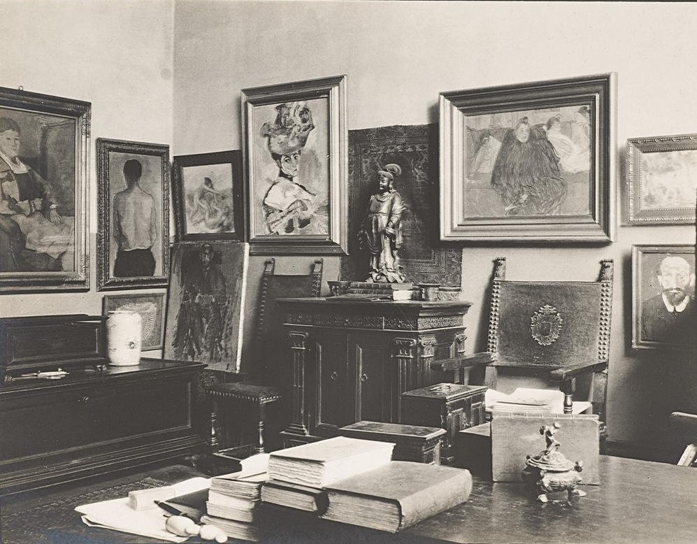
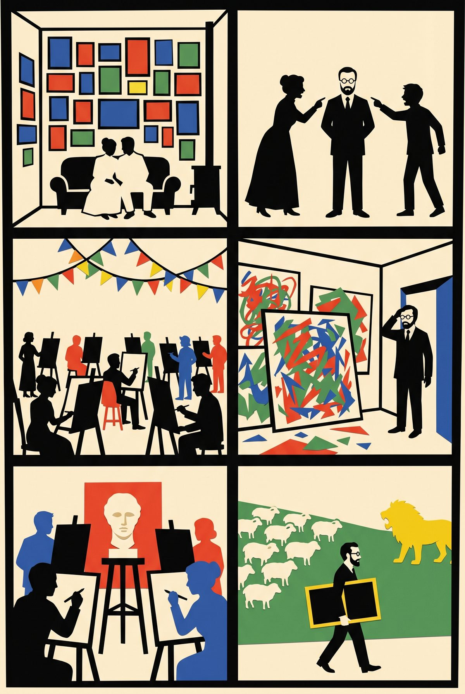
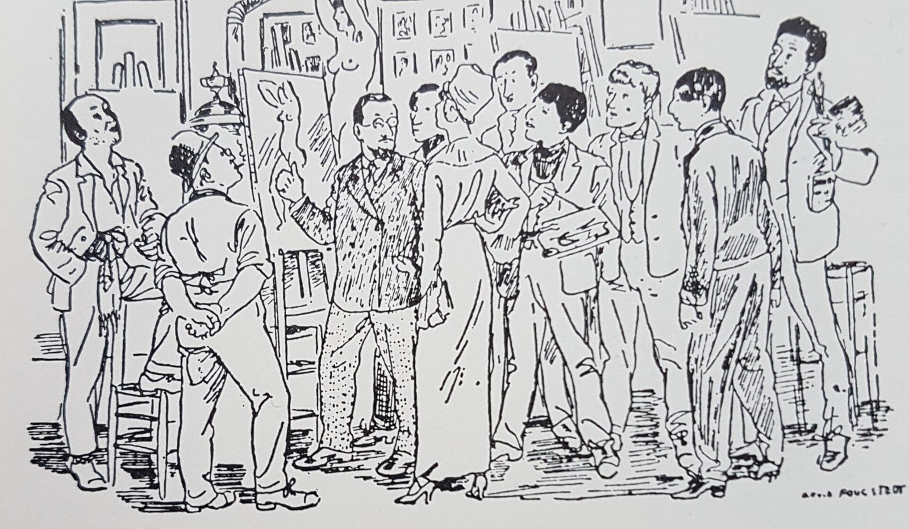
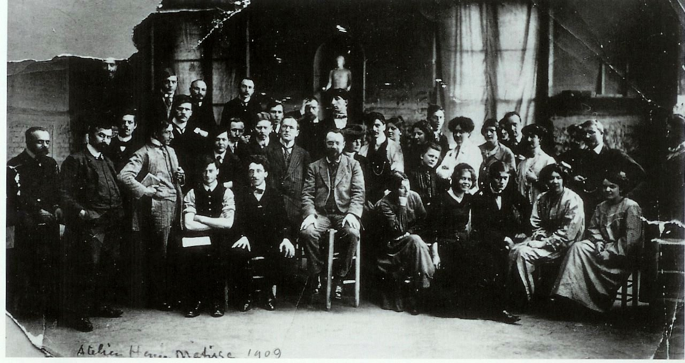
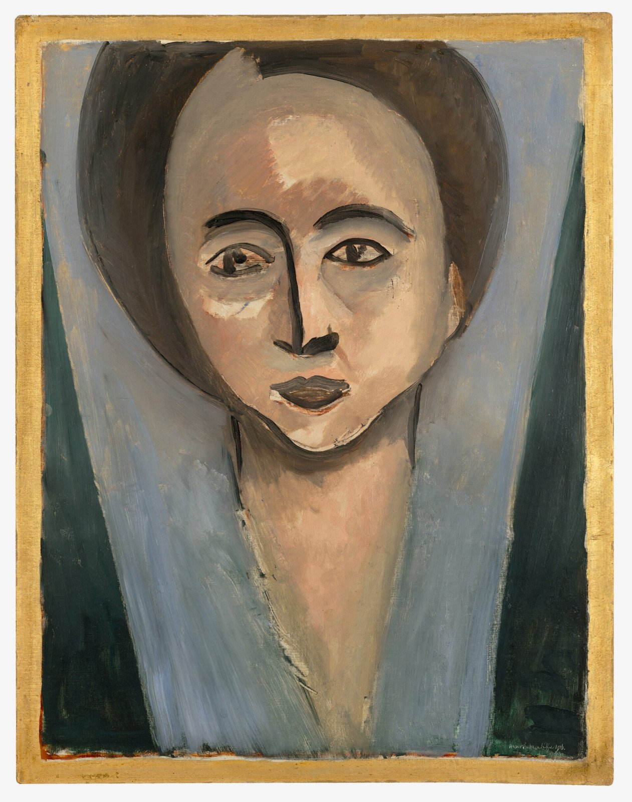

27 rue de Fleurus and 58 rue Madame, 400 m apart, 800 m north of the station square

The studio at 27 rue de Fleurus, c. 1906. Woman with a Hat hangs top centre. Public domain.
▶ Listen · How the Steins made Matisse · 5 min
Leo Stein from 1902, his sister Gertrude from 1903 to 1938, later with Alice Toklas. Saturday evenings began, Gertrude wrote, because "Matisse brought people, everybody brought somebody, and they came at any time and it began to be a nuisance". Leo bought Woman with a Hat for 400 francs after calling it the nastiest smear of paint he had ever seen. In 1906 the Steins brought Matisse and Picasso together.
At 58 rue Madame, the elder brother Michael and his wife Sarah hung the biggest Matisse collection of the day four and five high. Sarah talked Matisse into opening a school in January 1908. More than a hundred students, all but three foreigners. At the first critique he walked out, came back with a plaster Greek head and told them to draw from the antique first. "From Monday to Saturday I tried to turn these sheep into lions," he said later, and closed it in 1911. In July 1914 the couple lent nineteen Matisses to Berlin; war broke out; they never came back.
Fun fact
Picasso needed eighty or ninety sittings for Gertrude's portrait and finished the face from memory. Told it did not look like her: "She will."
Quiz · What did Matisse put in the middle of the room at the first critique of his school?
A plaster cast of an antique Greek head.
The story in six panels

11904. Michael and Sarah Stein hang Matisse's paintings four and five high at 58 rue Madame.
21908. Sarah Stein and the Swede Carl Palme talk him into opening a school. “Teach them.”
3Over a hundred students, all but three foreigners, more than half Scandinavian.
4First critique: huge canvases of tortured shapes and garish colour.
5Matisse walks out, comes back with a plaster Greek head, sets it in the middle. “The antique first.”
61911. “Monday to Saturday I tried to turn sheep into lions.” He closes the school.
Drawn in paper-cut style with Gemini from our script; no real person is depicted.
More to look at

Arvid Fougstedt, I Matisses ateljé (In Matisse's studio), c. 1910: Matisse among Palme, Levy, Percy, Hjertén, Engström, Grünewald, Jolin, Krohg and Simonsson. Public domain.

Matisse and his students, 1909. Grünewald stands behind him; Hjertén sits second from right in the front row. Nasjonalmuseet, Oslo. Public domain.

Henri Matisse, Portrait of Sarah Stein, 1916, one of the only pair of pendant portraits he made. SFMOMA. Public domain.